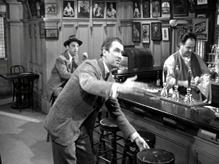

| Harvey/B+,B |
| Univeral/1950/105/FS 1.33/BW |
Harvey is such
a good-natured film, almost too sweet, especially for modern audiences. James Stewart, playing
Elwood P. Dowd, spends most of the film with the silliest grin on his face; this is one film where
the phrase pixilated should have been used. At least the lexicographers got in the word pooka as a
description for the white rabbit. Harvey is not one of the wacky comedies that throw me into
laughter conniptions. Mostly I smile or chuckle at the soft nature of the humor. The message of
tolerance is a good one certainly.
Harvey is about his small town guy, Elwood P. Dowd, who has an
imaginary friend, a six-foot-plus white rabbit. The white rabbit, Harvey, hangs around with Elwood
as he tipples at the local bar, or even, to the chagrin of his sister and niece, when the
ladies entertain. Niece Myrtle Mae is quickly growing long in the tooth and Vida, Elwood's ditzy
sister, is afraid no one will ever marry Myrtle Mae as long as Elwood and Harvey are around to
spook the suitors. What's a sister to do? Vida decides to do the unthinkable. The complications
from her act supply the best laughter and Myrtle Mae winds up with a suitor from the last place
you'd expect. And you can bet your last quarter that Dr. Chumley's Sanitarium will never be the
same.
 |
| Stewart guides Harvey to a seat. ©Universal |
For some reason, Harvey is often considered one of
Stewart's most beloved films. Personally, the gleam is in his eye often gets in my way and there
are times that I think one more smile will burn the celluloid. But Stewart has such screen magic
that you can forgive him almost any excess. Josephine Hull is
a gas as Vida, Elwood’s older sister. Talk about crazy. Veteran character actor Cecil Kellaway
has some fun as Dr. Chumley. Jesse White is pretty funny as Dr. Chumley's aide.
I've come to expect the best elements from
Universal's classic library of films, and Harvey is delivered in excellent condition.
The picture is very clean, but some scene are slightly soft, maybe from a little over-zealous
digital clean-up. Contrast is fine and the range of grays are excellent. Detail is comfortably
displayed. The mono soundtrack is has no hiss or other signs of age.

Selections from the Feature Archive include articles on
Akira Kurosawa, Frank
Darabont, Blonde Bimbos, Hollywood Street Gangs, or Vietnam: The
Hollywood Pariah, and many more....
Sturges Emerges
Preston Sturges was Hollywood's resident comic genius for more than a decade. His movies are
timeless. Click on his image to read all about it.

The Movie Poster Archive includes extensive poster images from the films of stars like Susan Hayward, Kirk Douglas, Katharine Hepburn and many more. Our featured star is James Stewart

 Have you visited Home
Theater Talk lately? One of the friendliest places on the Net for Home Theater and DVD
discussion, you can get help for installation problems or simply share your opinions with other
Vidiots.
Have you visited Home
Theater Talk lately? One of the friendliest places on the Net for Home Theater and DVD
discussion, you can get help for installation problems or simply share your opinions with other
Vidiots.

Easy to use interface with lots of vintage posters for sale.

Films of the Golden Age is
a showcase for special feature articles on film
people and Hollywood history, all illustrated with beautiful photographs and classic movie art.
A new online DVD retailer specializing in the Canadian market. Look for some interesting loss leaders and their buy ten get one free program.